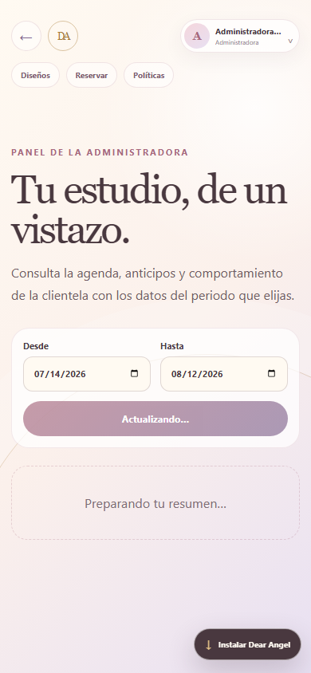
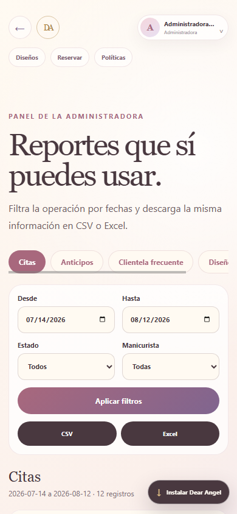
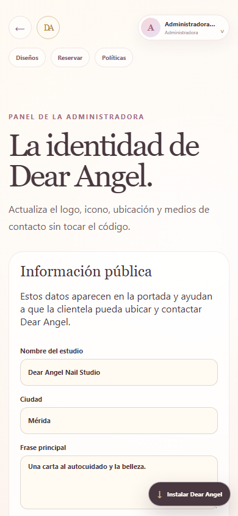

Cómo reservar, administrar citas, revisar anticipos y operar Dear Angel desde celular o computadora.
Manicuristas y administradora pueden entrar con correo o teléfono. La recuperación del personal se envía por correo cuando SMTP está activado.
La barra superior permanece visible al desplazarte y aparece en todos los apartados. Incluye Inicio, Experiencia, Diseños, Reservar, Políticas y la sesión; en móvil puedes deslizar sus accesos horizontalmente. La flecha regresa al apartado anterior.
En Mis datos se modifican nombre, tratamiento y contacto confirmando la contraseña actual. Cambiar el WhatsApp de un perfil cliente exige verificar nuevamente el número. La contraseña se gestiona como opción secundaria, salvo cuando la cuenta recibió una clave temporal.
Inicio muestra una selección breve de diseños destacados. Usa Ver todos los diseños para abrir el catálogo completo con filtros y favoritos.
En Cotizar selecciona técnica, largo, decoraciones y extras; puedes adjuntar hasta cinco imágenes. El resultado es una estimación sujeta a revisión. Elige quién deseas que lo revise o envíalo a cualquiera.
Una manicurista confirma o ajusta precio y tiempo. Solo entonces podrás reservar, y la cita quedará con quien tomó o recibió la cotización.
Mientras la solicitud siga pendiente o en revisión puedes cancelarla desde Cotizaciones. Una manicurista sólo ve solicitudes abiertas que puede tomar o las que ya tiene asignadas; después de que alguien la toma, deja de mostrarse al resto del equipo. Las imágenes adjuntas siguen la misma privacidad y no tienen un enlace público.
Usa esta opción para describir libremente tu idea. La manicurista se pondrá de acuerdo contigo fuera de la plataforma y luego podrá crear la cita manual desde su agenda.
Importante: el anticipo no es reembolsable. Las recompensas no reducen el anticipo; se aplican al pago físico cuando corresponda.
En Agenda se muestran fecha, manicurista, duración, diseño y estado. También llegan notificaciones internas y, al activar las credenciales reales, avisos por WhatsApp. La primera página prioriza las citas recientes; pulsa Cargar citas anteriores para consultar el historial restante.
| Acción | Regla |
|---|---|
| Reprogramación de cliente | Respeta el límite de cambios y las horas mínimas de aviso configuradas por la administradora. La agenda muestra la política vigente. |
| Cambio por personal | No consume el límite de reprogramaciones de la clienta o cliente. |
| Cancelación | Permitida; el anticipo no se devuelve. |
| Tolerancia | 10 minutos como política presencial; no cancela automáticamente en la web. |
Una cita marcada como atendida suma una visita global, sin importar quién realizó el servicio. El camino muestra recompensas bloqueadas, disponibles y utilizadas. Cada cupón es de un uso, no vence y no puede combinarse con otro.
La clienta o cliente debe recordar a la manicurista que tiene un cupón. La manicurista decide usarlo en el cobro físico y lo canjea desde el perfil correspondiente. Solo la administradora puede revertir un canje o corregir visitas.
El centro interno conserva citas, cambios, cotizaciones, anticipos, promociones y cupones. Los recordatorios se preparan 24 horas y 2 horas antes. Una falla de WhatsApp o correo no deshace la operación guardada dentro de Dear Angel.
Cada manicurista puede usar el horario global o personalizar periodos por día, incluyendo pausas para comer. También puede pausar nuevas reservaciones. Reducir disponibilidad no elimina citas existentes: la plataforma muestra una advertencia para revisarlas.
Las solicitudes dirigidas aparecen a la revisora elegida. Si la clienta seleccionó cualquiera, todas pueden verla y la primera que la tome se convierte en responsable. La revisora confirma precio, duración y comentario; después la clienta reserva únicamente con ella.
Al abrir una cita se avisa si la persona tiene beneficios disponibles. El canje se registra manualmente y se vincula con la cita; el descuento se cobra físicamente.
En Integraciones, cada manicurista conecta o desconecta su calendario. Dear Angel crea, cambia o cancela sus propios eventos. Los cambios hechos directamente en Google no sustituyen la agenda de la plataforma.
Alta, edición, pausa, archivo y reactivación de clientela y manicuristas; claves temporales y conversión de perfiles invitados.
Horario global, políticas de anticipación, duración, intervalo, aviso y límite de reprogramaciones, además de la gestión de cualquier cita.
Diseños, galería de hasta cinco imágenes, portada, precios, tiempos, publicación, técnicas y opciones de la calculadora.
Hitos ilimitados, promociones, cupones, correcciones de visitas y reversión de canjes.
Datos SPEI, políticas versionadas, revisión de comprobantes y notas de aprobación o rechazo.
Plantillas, canal, nombres aprobados por Meta, estado de entregas y reintentos.
Al editar un diseño puedes conservar hasta cinco imágenes. La primera es la portada pública; usa Usar como portada sobre otra imagen para cambiarla sin borrar el resto. Si eliminas la portada, la siguiente imagen pasa a ocupar ese lugar.
Elige Desde y Hasta para consultar citas, atenciones, ausencias, cancelaciones, anticipos pendientes, clientela frecuente y diseños populares. Los cálculos usan la zona horaria de Mérida.



Consulta citas, anticipos, clientela frecuente y diseños. Aplica fechas, estado y manicurista cuando corresponda. CSV y Excel descargan la misma consulta visible y los archivos se protegen contra fórmulas introducidas en textos.
Filtra el historial por fecha, acción, entidad y rol responsable. Aquí se registran cambios sensibles, exportaciones, ajustes de visitas, canjes, pagos y configuración.
En Configuración cambia nombre, frase, ciudad, dirección, teléfono, WhatsApp, redes, mapa, logo e icono. Las imágenes aceptadas son PNG, JPG o WebP de hasta 5 MB. El icono debe ser cuadrado y medir exactamente 512 × 512 px; el panel rechaza otras dimensiones.
En Chrome o Edge pulsa Instalar Dear Angel. También puedes abrir el menú del navegador y elegir Instalar aplicación.
La aplicación necesita internet para confirmar citas, pagos, cambios de cuenta y operaciones administrativas. Si la conexión falla, aparece un aviso y una pantalla segura; no se simula una confirmación.